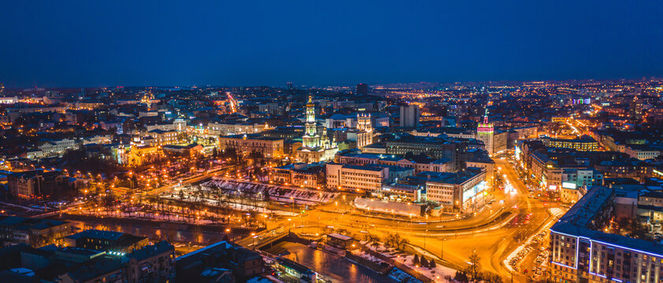
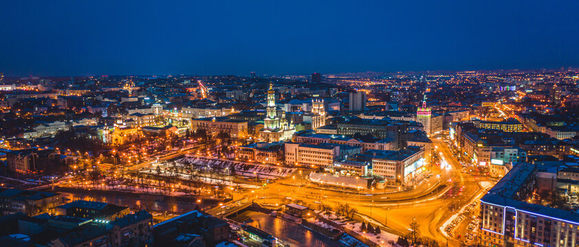
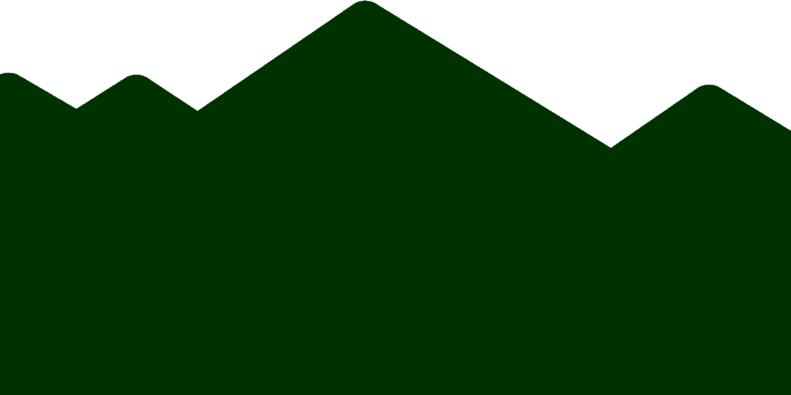
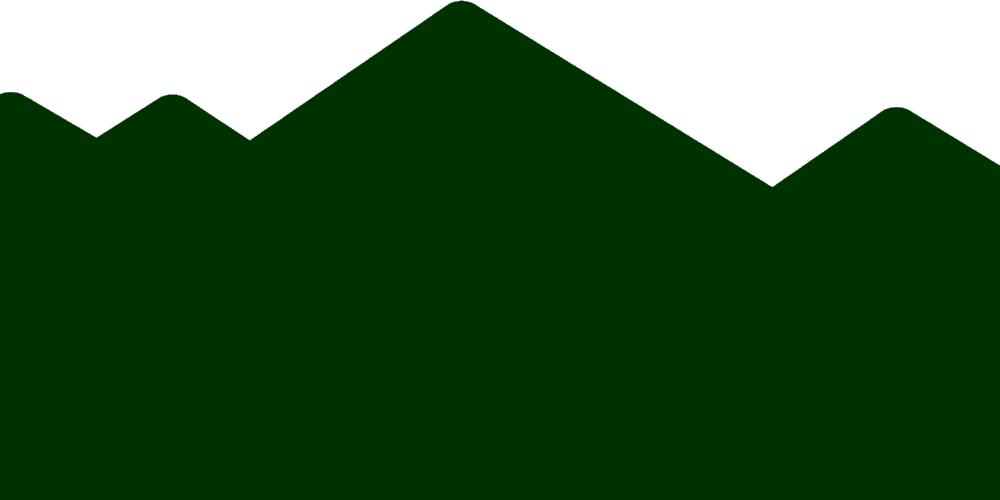

Піклуймося про довкілля Харкова разом!
Дізнайтеся про стан екології в місті та як ми можемо допомогти природі.
 


Що ми пропонуємо?
-
Екологічна просвіта
Дізнавайтеся про екологічні проблеми та способи їх вирішення. Наші матеріали допоможуть вам дізнатися, як правильно доглядати за довкіллям.
-
Ресурси для сортування
Отримайте інформацію про пункти прийому вторинної сировини в Харкові та як правильно сортувати відходи для зменшення навантаження на природу.
-
Екологічні ініціативи
Долучайтеся до наших екологічних проектів і заходів, спрямованих на очищення міста, збереження природних ресурсів та покращення якості повітря.
Наші проекти
-
Чисте Повітря Харкова
Слідкуйте за рівнем забруднення повітря у місті. Наші моніторингові дані допоможуть вам дізнатися, наскільки чисте повітря навколо.
Перейти на сайт -
Місто без сміття
Долучайтеся до наших акцій з прибирання парків і вулиць. Дізнайтеся про наші заходи, які допомагають утримувати місто в чистоті.
Перейти на сайт -
Посадка дерев
Ми висаджуємо дерева по всьому місту для покращення екології. Долучайтеся до акцій із посадки дерев і допоможіть створити зелений Харків!
Перейти на сайт


 
